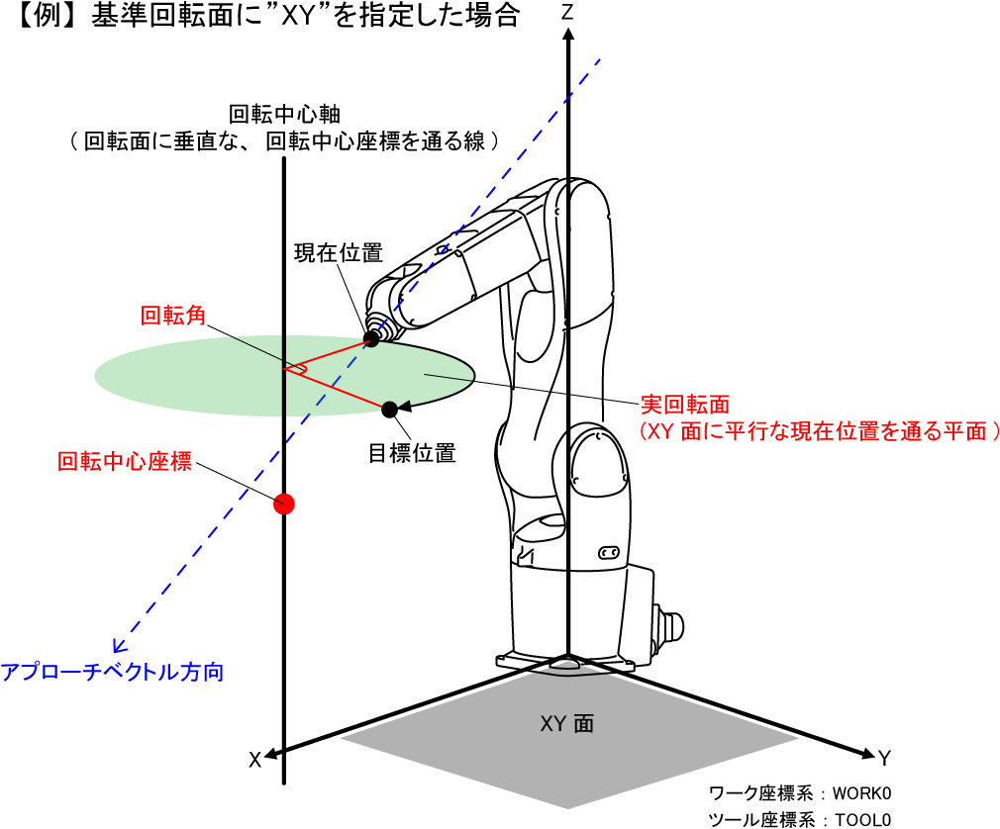
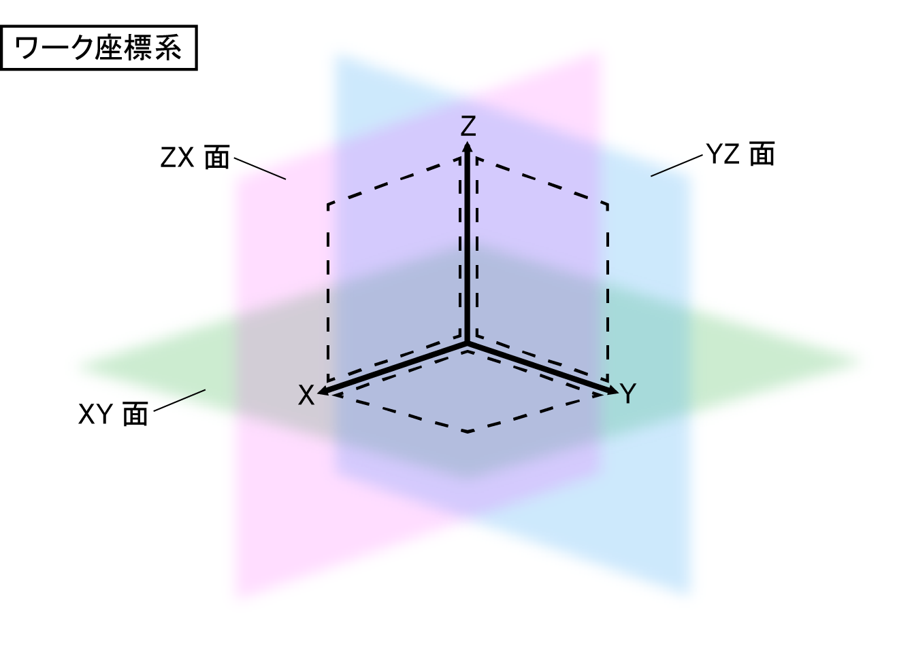
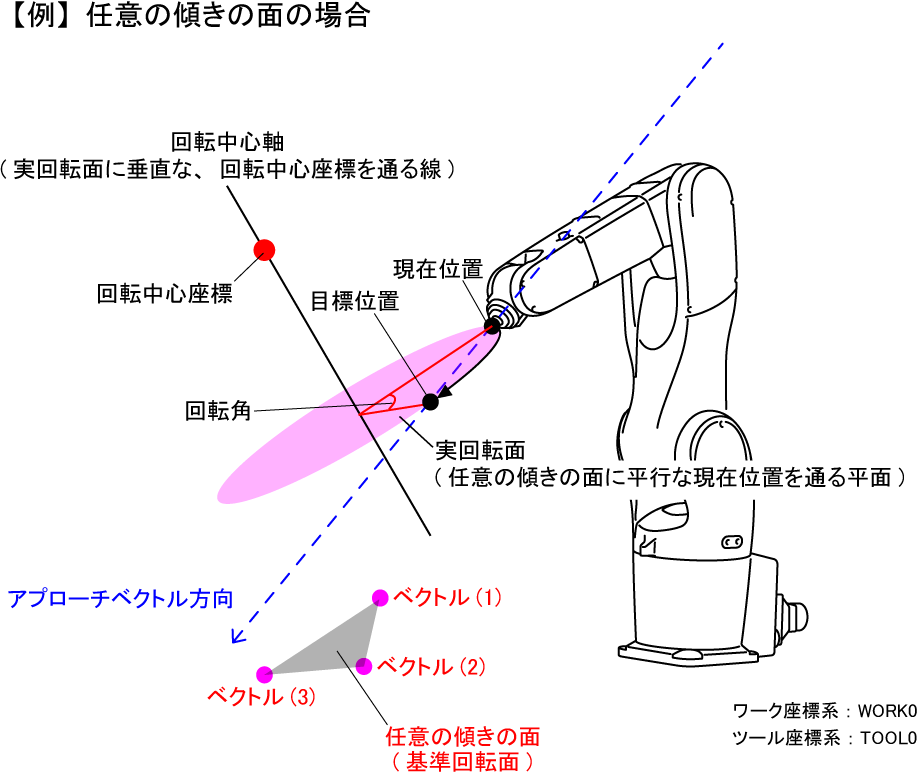
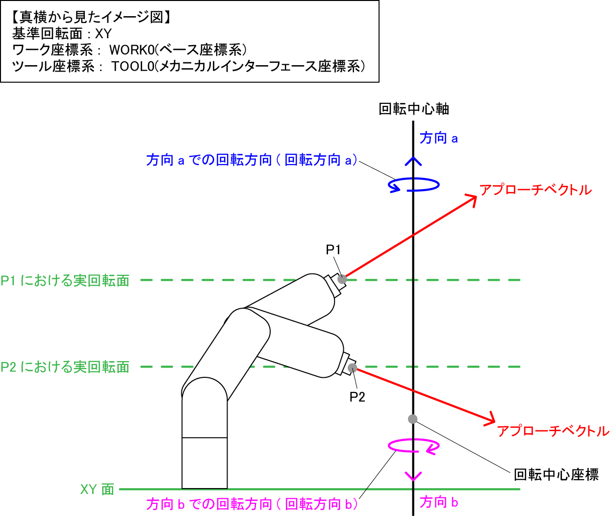
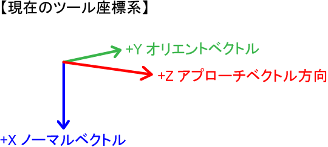
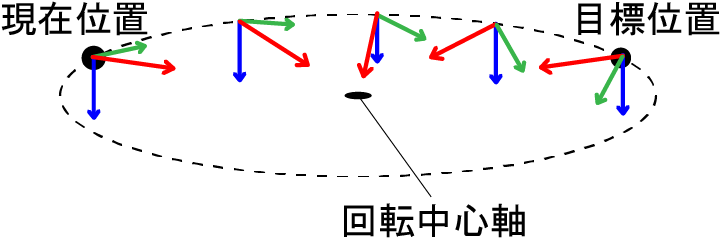
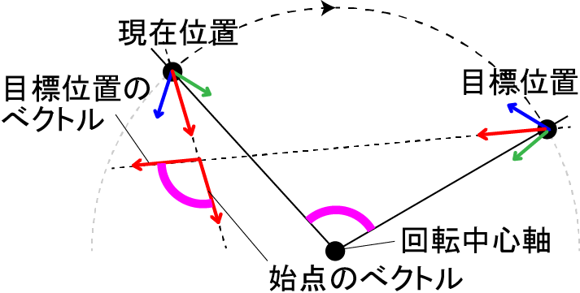
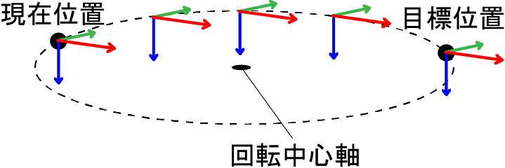

ID : 209
Rotate
機能
指定した軸回りの回転動作をします。
構文
Rotate 基準回転面, 回転角[, 回転中心座標][, pose = 回転オプション][, 動作オプション]
指定項目
- 基準回転面
- 実際に動作する時に通る平面に対して、基準となる平面を指定します。"XY"、"YZ"、"ZX"、"XYH"、"YZH"、"ZXH"、(ベクトル型, ベクトル型, ベクトル型)のいずれかで指定します。"基準回転面の指定"を参照してください。
- 回転角
- 回転する角度(Deg)を単精度実数型データで指定します。回転角には目標位置オプションを付加できます。回転方向はアプローチベクトルと実回転面の関係で決まります。"回転方向"を参照してください。
- 回転中心座標
- 回転中心座標をベクトル型データで指定します。実回転面に垂直で、この座標を通る軸が回転中心軸となります。
基準回転面の指定方法により、省略可能な場合があります。"回転中心座標の指定"を参照してください。 - 回転オプション
- "pose = 1"もしくは"pose = 2"で指定します。"回転オプション"を参照してください。
省略可能です。省略時は"pose = 2"です。 - 動作オプション
- 動作オプションを指定できます。
解説
指定した基準回転面に平行な、現在位置を通る平面（実回転面と呼びます）の面上を、指定した角度分、円弧動作します。その時の中心軸は、実回転面に垂直な、指定した回転中心座標を通る線となります。
また、このステートメントを実行するにはタスクがロボット軸の制御権を取得しなければなりません。

基準回転面の指定
基準回転面の指定は以下の指定方法があります。
- 現在のワーク座標系を元にした平面："XY"、"YZ"、"ZX"
- 現在のワーク座標系のX,Y,Z軸の内、2つの軸で作られる平面に平行な、現在位置を通る平面が、実回転面となります。"XY"はXY平面を、"YZ"はYZ平面を、"ZX"はZX平面を表します。
回転中心座標は省略可能です。省略したときはワーク座標原点(0,0,0)が代入されます。
XY面を指定した動作例はこちらをご覧ください。
- 現在のツール座標系を元にした平面："XYH"、"YZH"、"ZXH"
- 現在のツール座標系のX,Y,Z軸の内、2つの軸で作られる平面に平行な、現在位置を通る平面が、実回転面となります。"XYH"はXY平面を、"YZH"はYZ平面を、"ZXH"はZX平面を表します。
回転中心座標は省略できません。 - 任意の傾きの平面：(ベクトル型, ベクトル型, ベクトル型)
- 現在のワーク座標系で、3つの点をベクトル型データで指定し、その3点を通る平面と平行な、現在位置を通る平面が実回転面となります。
回転中心座標は省略可能です。省略したときは基準回転面を指定したベクトル型データの一つ目のベクトルの値が代入されます。
任意の傾きの平面を指定した動作例はこちらをご覧ください。
回転方向
回転方向は回転中心軸のベクトルの向きに対し右ねじ回りになります。
回転中心軸のベクトル方向は2方向ありますが、実回転面に対するアプローチベクトルの向きで決まります。
例えば、下図のような場合、回転中心軸のベクトル方向は、方向aと方向bが存在します。この時、現在位置がP1の場合、実回転面に対し、アプローチベクトルが方向a側に向いているので、回転方向は回転方向aとなります。現在位置がP2の場合はその逆になるので、回転方向は回転方向bとなります。

現在位置でのアプローチベクトル方向が実回転面に対して平行である場合は、回転方向が一意に決まらなくなり、同じ動作でも回転方向がその時によって変わってしまう可能性があります。その場合は、現在位置や実回転面の条件を見直してください。
回転中心座標の指定
回転中心座標の座標系は指定する基準回転面によって異なります。下表を参照してください。
| 指定する基準回転面 | 座標系 | 省略について |
|---|---|---|
XY、YZ、ZX |
現在のワーク座標系での座標を指定してください。 | 省略可能。 省略時は、現在のワーク座標系の原点が回転中心座標となります。 |
XYH、YZH、ZXH |
現在のツール座標系での座標を指定してください。 | 省略不可 |
| 任意の傾きの平面 | 現在のワーク座標系での座標を指定してください。 | 省略可能。 省略時は、指定する基準回転面の1番目のベクトル型データが、回転中心座標となります。 |
回転オプションの指定
回転オプションとは円弧動作に伴って姿勢を回転させるかどうかを指定します。
"Pose = 1"を指定すると、円弧動作とともに回転中心軸を軸として姿勢も回転します。
"Pose = 2"を指定すると現在位置の姿勢を保ったまま軌跡だけ円弧動作します。
現在のツール座標系が下の図のような状態である場合の動作例を下記に示します。

- Pose=1の場合
|  |  |
上の図は、左の図を実回転面の真上からみたイメージです。 ツール座標系の各ベクトルが、回転中心軸を軸に、指定した回転角と同じだけ回転します。 例えば、アプローチベクトルの場合、現在位置のアプローチベクトルと目標位置のアプローチベクトルがなす角は、指定した回転角と同じになります。 |
- Pose=2の場合
|  |
関連項目
注意事項
ロボットの現在位置によっては、動作経路の中で動作できない箇所が存在し、エラーとなる場合があります。その場合、ロボットの現在位置や回転の条件を見直してください。
用例
'!TITLE "軸回りの回転動作"
' 実回転面に垂直な軸回りで指定した角度の値分回転動作
Sub Sample_Rotate
Dim aaa As Position
Dim bbb As Position
TakeArm Keep = 1
' 現在位置をaaaに代入
aaa = CurPos
' V[1]の点を通るXY平面に垂直な軸回りで45度回転
Rotate XY, 45, V[1]
' 現在位置をbbbに代入
bbb = CurPos
' メッセージ出力ウィンドウに初期位置を表示
PrintDbg aaa
' メッセージ出力ウィンドウに現在位置を表示
PrintDbg bbb
End SubID : 209
- このページに関連する情報
- Rotateの動作例